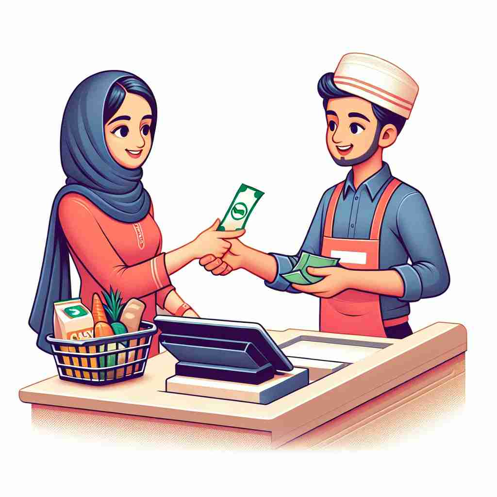
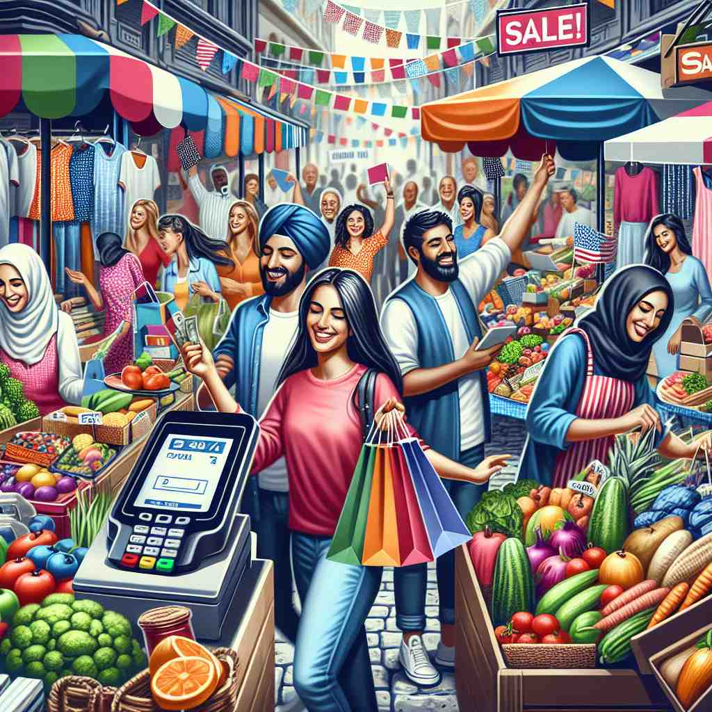

💬 She decides to purchase groceries for the week.
💬 She wants to purchase an item at the checkout.

💬 She is excited to make a purchase at the market.

💬 She wants to purchase fresh vegetables at the market.
🔈 ['pɜ:tʃəs]
🗝️ v. to buy something by paying money for it
🖼️ 在一个繁忙的超市里，一位顾客正在收银台前排队。他手里拿着一包新鲜的水果，掏出钱包，准备付款。这个场景完美诠释了‘purchase’的核心含义：通过付钱来购买某物。
🔍 想象你用金钱"购买"（purchase）一件物品的过程。这个核心动作可以延伸到用努力换取成果，以及购买行为本身和所购之物。甚至在攀岩时，牢牢抓住岩壁也可以看作是"购买"了一个稳固的抓握点。通过联想"交换"和"获得"这两个关键概念，你可以更好地理解和记忆 purchase 的多重含义。
💬 She decides to purchase groceries for the week.
💬 She wants to purchase an item at the checkout.
💬 She is excited to make a purchase at the market.
💬 She wants to purchase fresh vegetables at the market.
🌳 由词根 'purch-'（来自拉丁语，意为‘获得’）加上动词后缀 '-ase'（变化而来）构成，表示 '购买，获得'。
💡 记忆 'purchase' 时，可以联想为 'purse'（钱包）+ 'chase'（追逐）。想象有人追逐着要用钱包购买某物，这样可以帮助记住它与购买相关的意思。
🗝️ v. to obtain something by effort or sacrifice
🖼️ 在一个热闹的市集上，一位商人在讨价还价。他费了很大工夫，用自己的商品与另一位商贩交换到稀有的香料，展示了‘purchase’通过努力或牺牲来获得某物的含义。
💬 The team purchased victory through hard work and determination.
❓ 类比用金钱"购买"，用努力或牺牲来"获得"某物
🗝️ n. the act of buying something
🖼️ 在一个典雅的画廊里，一位顾客兴奋地签署文件，完成了一桩艺术品交易。此时，他享受着购买收藏品的满足感，体现了‘purchase’作为购买行为的含义。
💬 The purchase of the house was completed yesterday.
❓ 由动词"购买"转变为名词，表示购买的行为
🗝️ n. something that has been bought
🖼️ 在一个温馨的家庭里，小女孩带着新的玩具熊回到家，迫不及待地展示给父母看。这个玩具熊是她当天的快乐‘purchase’，展示了‘purchase’作为购买之物的含义。
💬 She was excited to show off her new purchases.
❓ 从购买行为延伸到购买的结果，即所购之物
🗝️ n. a firm hold or grip
🖼️ 在悬崖边缘，一个攀岩者紧紧抓住突出的岩石，以保持平衡和安全。此时的他依赖于稳固的‘purchase’，即牢牢的抓握来确保自己不会跌落。这展示了‘purchase’作为牢固抓握的含义。
💬 The climber struggled to get a good purchase on the rocky surface.
❓ 源自古法语"购买"的含义，引申为"获得控制或掌握"